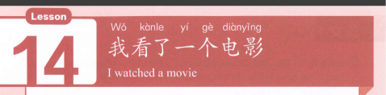
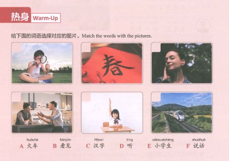
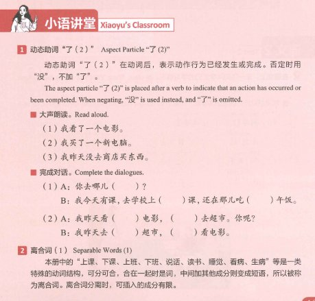
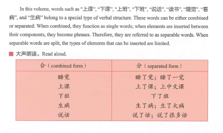
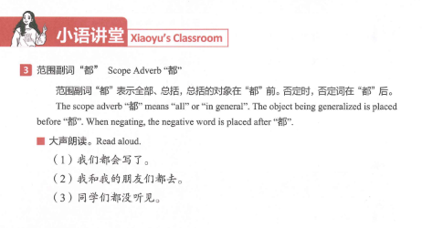
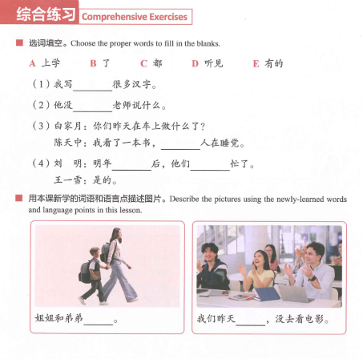

Latihan percakapan · 对话练习

Arti: "I watched a movie." / "Saya menonton sebuah film."
Arti Literal: "saya menonton sudah satu film" · Bahasa Santai: "aku udah nonton satu film"
Kalimat ini memperkenalkan partikel aspek 了 (le) setelah kata kerja untuk menyatakan tindakan yang sudah terjadi atau selesai dilakukan:
我 (wǒ = saya),
看了 (kànle = sudah menonton),
一个 (yí gè = sebuah/satu), dan
电影 (diànyǐng = film).



| 合 (Combined Form / Gabung) | 分 (Separated Form / Pisah) |
|---|---|
|
睡觉 (shuìjiào)
tidur
|
睡了觉 (shuìle jiào)； 睡了一觉 (shuìle yí jiào)
sudah tidur; tidur sebentar / sekali
|
|
上课 (shàngkè)
masuk kelas / mengikuti pelajaran
|
上了课 (shàngle kè)； 上中文课 (shàng Zhōngwén kè)
sudah masuk kelas; mengikuti kelas bahasa Mandarin
|
|
下班 (xiàbān)
pulang kerja / selesai kerja
|
下了班 (xiàle bān)
sudah pulang kerja
|
|
生病 (shēngbìng)
sakit / jatuh sakit
|
生了病 (shēngle bìng)； 生了大病 (shēngle dà bìng)
sudah jatuh sakit; sakit parah
|
|
说话 (shuōhuà)
berbicara / mengobrol
|
说了话 (shuōle huà)； 说了很多话 (shuōle hěn duō huà)
sudah berbicara; berbicara banyak hal
|


Pilihan yang tepat: B. 了
Pilihan yang tepat: D. 听见
Pilihan yang tepat: E. 有的
Pilihan yang tepat: A. 上学 dan C. 都